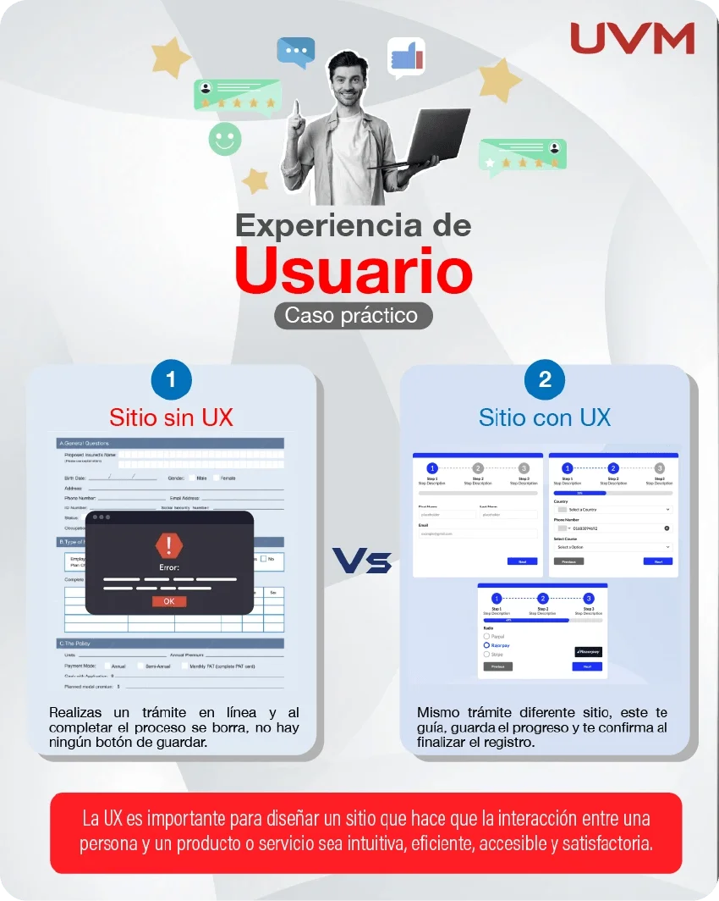
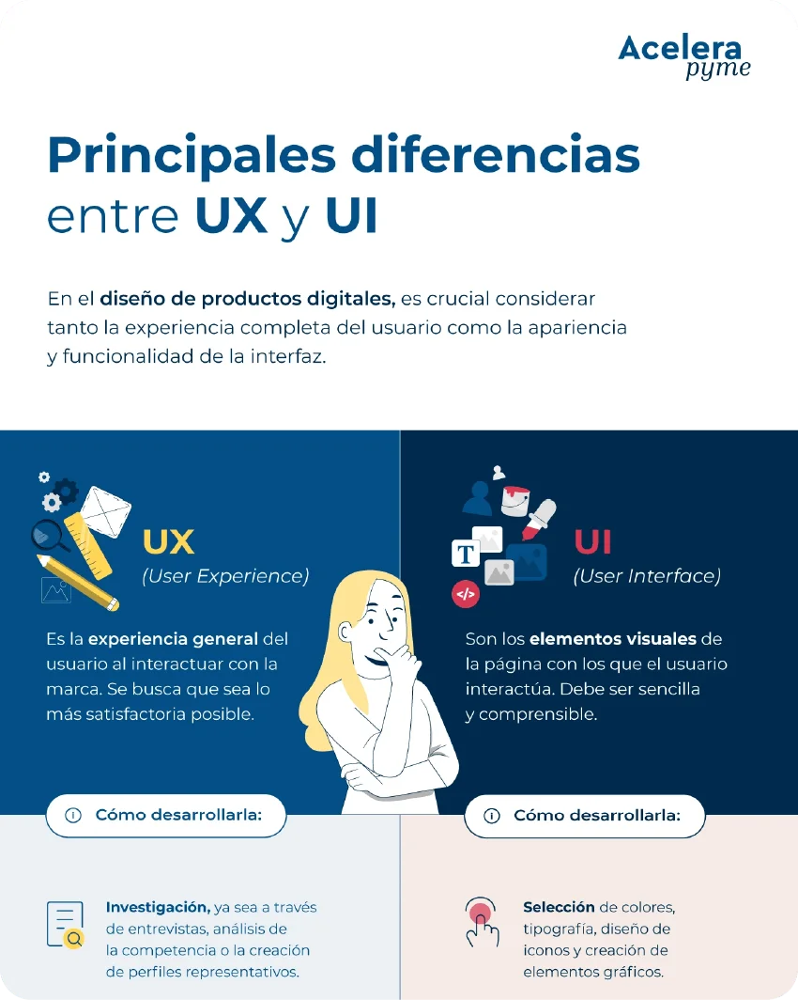

Bienvenidos
¿QUÉ ES LA EXPERIENCIA DE USUARIO?
La experiencia de usuario (conocida también como UX) se refiere a la experiencia general que tiene un cliente o usuario al interactuar con un producto, sistema o servicio. Reúne todas las opiniones de los usuarios respecto de un producto o servicio, por ejemplo, facilidad de uso, accesibilidad, diseño visual, funciones de la interfaz de usuario e impacto emocional de usar el producto, para luego hacer una evaluación.
La UX tiene como objetivo satisfacer las necesidades y expectativas de los usuarios garantizando que el producto o servicio sea fácil de navegar, responda según lo previsto y sea eficiente. Esto implica comprender las preferencias de los usuarios y los comportamientos de los clientes. Este feedback se puede recopilar a través de entrevistas con los usuarios, encuestas y pruebas de usabilidad del diseño web o la aplicación de la empresa. El objetivo de los profesionales de UX es identificar los puntos débiles que podrían obstaculizar la experiencia delusuario y resolverlos mediante opciones de diseño bien razonadas para producir mejores productos. El diseño de UX es iterativo, lo que significa que evoluciona con el tiempo a través de pruebas, feedback y perfeccionamiento continuo.
Videos e infografías
Tenemos para ti una serie de videos que explican la UX
La experiencia de usuario no se limita a la apariencia de un sitio web: también implica comprender las necesidades de las personas, facilitar la navegación y evitar obstáculos durante su recorrido. Analizar un caso práctico permite identificar cómo las decisiones de diseño influyen en la interacción y qué mejoras pueden hacer que una experiencia sea más clara, intuitiva y satisfactoria.
Diferencias entre UX y UI
¡Traemos para ti dos infografías muy interesantes!
Aunque UX y UI están estrechamente relacionadas, cada disciplina aborda diferentes aspectos del diseño digital. Mientras que UX se ocupa de que el producto responda a las necesidades de las personas y les permita alcanzar sus objetivos con facilidad, UI se concentra en la manera en que estas interactúan con los elementos visuales y funcionales de la interfaz. En otras palabras, UX considera la experiencia en su conjunto, mientras que UI se enfoca en la interfaz mediante la cual esa experiencia se lleva a cabo.
El diseño UI, o User Interface Design, comprende las decisiones visuales e interactivas que permiten a los usuarios comunicarse con un sitio web, una aplicación u otro producto digital. Esto incluye la selección de colores, tipografías, iconos, botones, imágenes, menús y otros componentes que conforman la interfaz. También considera la distribución de los elementos, los espacios entre ellos, el contraste y la jerarquía visual, con el propósito de presentar la información de forma clara y facilitar la interacción.
Una interfaz bien diseñada debe permitir que las personas identifiquen fácilmente los elementos importantes, comprendan qué acciones pueden realizar y reconozcan las respuestas del sistema.
Por ejemplo, un botón debe tener una apariencia que permita distinguirlo de otros elementos y un texto que comunique claramente su función. De igual manera, los formularios deben organizar sus campos de manera comprensible y ofrecer indicaciones útiles cuando el usuario comete un error. Por ello, UI no consiste únicamente en hacer que una pantalla se vea atractiva, sino también en comunicar visualmente cómo se utiliza un producto.
Por su parte, UX interviene en aspectos que van más allá de la apariencia de la interfaz.

Infografia
“Experiencia de usuario”
En esta infografía podrás ver cómo el usuario es afectado por un sitio sin UX
DESCARGAR
Infografia
“Principales Diferencias entre UX y UI”
En esta infografía de las principales diferencias entre la Experiencia y la Funcionalidad
DESCARGAR